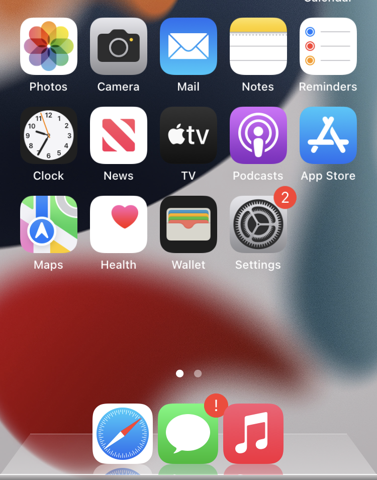

Five columns of icons on your Home Screen pages instead of four, and room for five icons in the Dock.
Works on pages with widgets too: widgets are resized so they fit the grid.
Folders, the Today View and the App Library stay as they are.
One setting: Settings → Quintet → Five-Icon Dock, on by default. Turn it off if another tweak changes your Dock. Uninstall and your icons flow back to four columns.

What's New in beta3
Not for iOS 18: Sileo won't install it there anymore. On iOS 18, beta2 could put the phone into safe mode, and five columns made opening folders and swiping back from the App Library stutter. iOS 15–17 are unchanged.
Earlier in beta2: the five-icon Dock can be turned off (Settings → Quintet), with a Respring button. iOS 17 and A12 and newer confirmed.
Device Support
arm64 and arm64e (A12 and newer) builds, checked for the correct arm64e format.
iOS 15–17. Not iOS 18.
Tested on an iPhone 7 (A10) with iOS 15.8.6 and Dopamine. Also tested on an iPhone SE (2nd gen, A13) with iOS 17.5.1 (arm64e), so A12 and newer are confirmed. iOS 16 isn't confirmed yet: please report back. If it puts you into safe mode, open Sileo (safe mode still allows it) and uninstall it.
Notes
Beta. If something looks wrong, uninstall it and please report back.
iOS moves icons around by itself when the grid changes; nothing is lost.
Only for rootless jailbreaks with ElleKit (Dopamine).
Credits
Written from scratch by John d_ie, after a request on r/jailbreak.